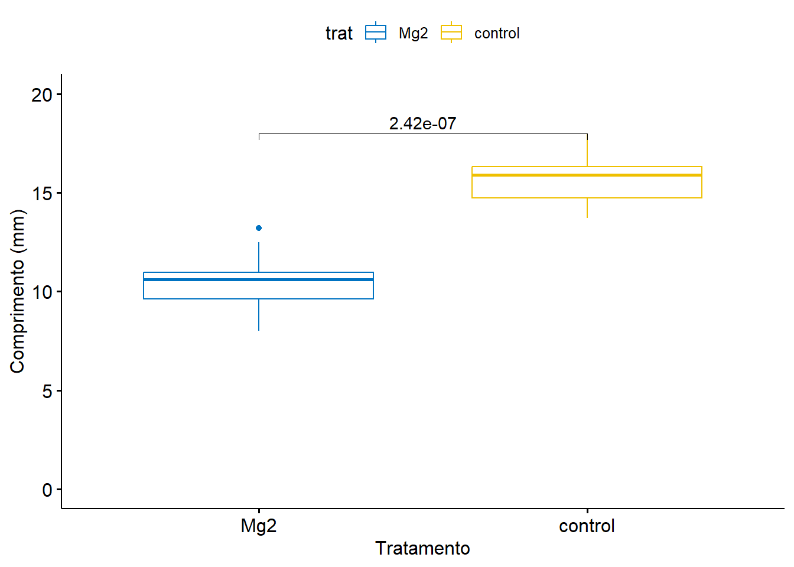
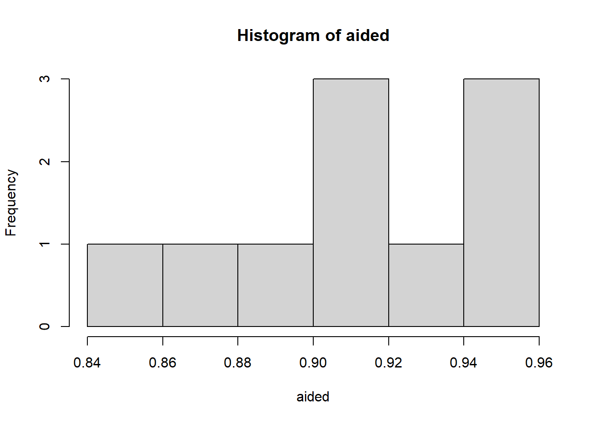

install.packages("rstatix")
install.packages("report")
install.packages("ggpubr")Teste T
O Teste T é utilizado para testar uma hipótese sobre uma média populacional. Os requisitos para a utilização do Teste T são: método de seleção amostral aleatória, uma amostra com distribuição normal (paramétrica) e cuja variável a ser analisada é quantitativa. O Teste T é robusto contra um afastamento da normalidade, portanto, deve ser utilizado somente em amostras com distribuição paramétrica.
Resumo Teste T
| Teste | Distribuição | Grupos | Depedência | Resquisitos |
|---|---|---|---|---|
| T pareado | Paramétrico | 2 | Dependentes | Variâncias desconhecidas |
| T para duas amostras | Paramétrico | 2 | Independentes | Variâncias iguais |
| T para 2 amostras com variâncias diferentes | Paramétrico | 2 | Independentes | Variâncias diferentes |
üí°Lembrete
Variável Independente: É a variável que o pesquisador manipula ou divide os grupos para observar seu efeito sobre a variável dependente. Exemplo: o pesquisador manipula o tipo de fertilizante que será aplicado às plantas para observar como isso afeta seu crescimento.
Variável Dependente: É a variável que é medida para observar o efeito das mudanças na variável independente. Exemplo: o crescimento das plantas é a variável que será medida para observar o efeito dos diferentes tipos de fertilizantes.
Teste T com com variáveis independentes
Pacotes que ainda não foram usados neste site e precisam ser instalados
library(ggplot2)
library(gsheet)
library(tidyverse)
dat_mg <- gsheet2tbl("https://docs.google.com/spreadsheets/d/1bq2N19DcZdtax2fQW9OHSGMR0X2__Z9T/edit?gid=983033137#gid=983033137")
# Visualizando os dados com um gráfico de dispersão
dat_mg |>
ggplot(aes(trat, comp)) +
geom_jitter(width = 0.1)Realizando o Teste T
Agora, vamos realizar o Teste T para comparar os tratamentos. Primeiro, veremos os dados em formato largo e depois aplicaremos o teste para comparar os tratamentos control e Mg2.
dat_mg2 <- dat_mg |>
pivot_wider(names_from = trat, values_from = comp) |> # Transformando os dados de "long" para "wide"
dplyr::select(-rep) # Removendo a coluna "rep"
head(dat_mg2)# A tibble: 6 × 2
Mg2 control
<dbl> <dbl>
1 9 13.7
2 12.5 15.9
3 10 15.7
4 8 14.2
5 13.2 15.9
6 11 16.5Teste T para comparação de médias
Agora, aplicamos o Teste T para comparar as médias dos tratamentos control e Mg2.
attach(dat_mg2) # Facilitando o acesso às colunas dos dados
t_results <- t.test(control, Mg2) # Comparando as duas condições
t_results
Welch Two Sample t-test
data: control and Mg2
t = 8.1549, df = 17.354, p-value = 2.423e-07
alternative hypothesis: true difference in means is not equal to 0
95 percent confidence interval:
3.825607 6.490393
sample estimates:
mean of x mean of y
15.678 10.520 Explicando os resultados
library(report)
# Explicando os resultados do Teste T
report(t_results)Effect sizes were labelled following Cohen's (1988) recommendations.
The Welch Two Sample t-test testing the difference between control and Mg2
(mean of x = 15.68, mean of y = 10.52) suggests that the effect is positive,
statistically significant, and large (difference = 5.16, 95% CI [3.83, 6.49],
t(17.35) = 8.15, p < .001; Cohen's d = 3.65, 95% CI [2.14, 5.12])O pacote report gera uma explicação detalhada sobre o resultado do teste, incluindo o valor p e as conclusões.
Realizando o Teste T no formato longo
Agora, vamos realizar o Teste T no formato longo dos dados, utilizando o pacote rstatix.
library(rstatix)
# Realizando o Teste T no formato longo
test <- t_test(comp ~ trat, data = dat_mg)
test# A tibble: 1 × 8
.y. group1 group2 n1 n2 statistic df p
* <chr> <chr> <chr> <int> <int> <dbl> <dbl> <dbl>
1 comp control Mg2 10 10 8.15 17.4 0.000000242O rstatix é um pacote para facilitar a realização de análises estatísticas no R, com uma sintaxe simples e intuitiva. Ele oferece funções para realizar testes estatísticos comuns (como t-test, ANOVA, correlação), análise de variância, testes de normalidade, entre outros, além de simplificar a forma como os resultados são apresentados.
Gráfico de Boxplot
Utilizando o pacote ggpubr, vamos criar um boxplot para visualizar as diferenças entre os tratamentos control e Mg2, incluindo o valor p manualmente.
library(ggpubr)
# Criando o gráfico de boxplot
p <- ggboxplot(
dat_mg, x = "trat", y = "comp",
color = "trat", palette = "jco"
)
print(p)# Adicionando o valor p manualmente no gráfico
p + stat_pvalue_manual(test, label = "p", y.position = 18) +
ylim(0, 20) +
labs(x = "Tratamento", y = "Comprimento (mm)")
# Salvando o gráfico como imagem
ggsave("plot2.png", bg = "white")O pacote ggpubr fornece algumas funções fáceis de usar para criar e personalizar gráficos prontos para publicação baseados em ggplot2.
Testando a normalidade dos dados
Antes de realizar o Teste T, é importante verificar a normalidade dos dados. Vamos usar o Teste de Shapiro-Wilk para testar se os dados seguem uma distribuição normal.
library(rstatix)
# Realizando o teste de normalidade de Shapiro-Wilk para cada grupo
shapiro.test(Mg2)
Shapiro-Wilk normality test
data: Mg2
W = 0.97269, p-value = 0.9146shapiro.test(control)
Shapiro-Wilk normality test
data: control
W = 0.93886, p-value = 0.5404# Criando histogramas para visualizar a distribuição
hist(Mg2)
hist(control)
O teste de Shapiro-Wilk é um teste de hipóteses que avalia se um conjunto de dados é normalmente distribuído. Ele avalia dados de uma amostra com a hipótese nula de que o conjunto de dados é normalmente distribuído. Um valor de p alto indica que o conjunto de dados é normalmente distribuído, enquanto um valor de p baixo indica que ele não é normalmente distribuído.
Teste de homogeneidade de variâncias
Por fim, vamos testar se as variâncias entre os dois grupos são homogêneas utilizando o Teste F.
var.test(dat_mg2$Mg2, dat_mg2$control) # Teste de variâncias
F test to compare two variances
data: dat_mg2$Mg2 and dat_mg2$control
F = 1.4781, num df = 9, denom df = 9, p-value = 0.5698
alternative hypothesis: true ratio of variances is not equal to 1
95 percent confidence interval:
0.3671417 5.9508644
sample estimates:
ratio of variances
1.478111 O Teste F é utilizado principalmente para testar a igualdade de variâncias entre dois ou mais grupos. Ele é uma ferramenta essencial em diversas análises estatísticas, especialmente antes de realizar testes como o Teste T, que exige que as variâncias dos grupos sejam homogêneas (iguais).
Atenção: caso as variâncias não sejam homogêneas, o parâmetro var.equal = FALSE deve ser utilizado dentro do Teste T.
Realizando o Teste T com váriaveis dependentes
library(gsheet)
# Carregando os dados da planilha do Google
escala <- gsheet2tbl("https://docs.google.com/spreadsheets/d/1bq2N19DcZdtax2fQW9OHSGMR0X2__Z9T/edit?gid=1729131173#gid=1729131173")Agora, vamos realizar o Teste T Pareado para comparar a acurácia entre as duas condições de avaliação (Unaided e Aided1). Usaremos o parâmetro paired = TRUE para indicar que as amostras são pareadas, e var.equal = FALSE para não assumir que as variâncias dos dois grupos são iguais.
library(rstatix)
test <- t_test(acuracia ~ assessment,
data = escala,
paired = TRUE,
var.equal = FALSE)
test# A tibble: 1 × 8
.y. group1 group2 n1 n2 statistic df p
* <chr> <chr> <chr> <int> <int> <dbl> <dbl> <dbl>
1 acuracia Aided1 Unaided 10 10 4.42 9 0.00167Visualizando a Distribuição com Boxplot
A seguir, vamos visualizar a distribuição das acurácias nas diferentes condições de avaliação usando um gráfico de boxplot:
library(ggplot2)
escala |>
ggplot(aes(assessment, acuracia)) +
geom_boxplot()
Filtrando os dados para cada condição
Vamos agora separar os dados para as duas condições de avaliação: “Unaided” (sem auxílio) e “Aided1” (com auxílio). Em seguida, extraímos os valores de acurácia para cada uma.
unaided <- escala |>
filter(assessment == "Unaided") |>
select(acuracia) |>
pull()
unaided [1] 0.81 0.72 0.40 0.82 0.75 0.45 0.81 0.78 0.78 0.50aided <- escala |>
filter(assessment == "Aided1") |>
select(acuracia) |>
pull()
aided [1] 0.91 0.91 0.91 0.96 0.96 0.90 0.85 0.88 0.95 0.94Testando a igualdade de variâncias
Antes de aplicar o Teste T, é importante verificar se as variâncias entre os dois grupos são iguais. Vamos usar o Teste F para testar essa hipótese:
# Testando a igualdade de variâncias entre os dois grupos usando o teste F
var.test(unaided, aided)
F test to compare two variances
data: unaided and aided
F = 20.978, num df = 9, denom df = 9, p-value = 0.000106
alternative hypothesis: true ratio of variances is not equal to 1
95 percent confidence interval:
5.210754 84.459185
sample estimates:
ratio of variances
20.97847 Visualizando a distribuição com histogramas
A seguir, vamos visualizar as distribuições das acurácias para ambas as condições usando histogramas. Isso nos ajudará a entender a forma das distribuições.
hist(unaided) 
hist(aided) 
Testando a normalidade dos dados
# Realizando o teste de normalidade de Shapiro-Wilk para cada grupo
shapiro.test(unaided)
Shapiro-Wilk normality test
data: unaided
W = 0.7748, p-value = 0.007155shapiro.test(aided)
Shapiro-Wilk normality test
data: aided
W = 0.92852, p-value = 0.4335Aplicando o Teste T
Com os dados sendo normais e as variâncias sendo testadas, podemos aplicar o Teste T Pareado para comparar as duas condições.
# Realizando o teste t pareado para comparar as duas condições
# Este teste é usado para dados com distribuição normal e variâncias homogêneas
t.test(unaided, aided, paired = TRUE, var.equal = FALSE)
Paired t-test
data: unaided and aided
t = -4.4214, df = 9, p-value = 0.001668
alternative hypothesis: true mean difference is not equal to 0
95 percent confidence interval:
-0.3552353 -0.1147647
sample estimates:
mean difference
-0.235 Teste Não Paramétrico de Wilcoxon
Caso os dados não atendam aos pressupostos do Teste T (como a normalidade), podemos usar o Teste de Wilcoxon como uma alternativa não paramétrica.
wilcox.test(unaided, aided)
Wilcoxon rank sum test with continuity correction
data: unaided and aided
W = 0, p-value = 0.0001756
alternative hypothesis: true location shift is not equal to 0O teste de postos com sinais de Wilcoxon é um teste nao-paramétrico que usa os postos de dados amostrais compostos de pares combinados. É usado pra testar diferenças nas distribuições populacionais, de modo que as hipóteses nula e alternativa são:
Ho : as duas amostras provém de populações com a mesma distribuição.
H1: as duas amostras provém de populações com distribuições diferentes.
Teste de Mann-Whitney para Grupos Independentes
Se quisermos comparar duas amostras independentes, podemos utilizar o Teste de Mann-Whitney. Aqui, as condições “Unaided” e “Aided1” são tratadas como grupos independentes.
# Aqui, 'paired = FALSE' é usado porque estamos comparando grupos independentes
wilcox.test(unaided, aided, paired = FALSE)
Wilcoxon rank sum test with continuity correction
data: unaided and aided
W = 0, p-value = 0.0001756
alternative hypothesis: true location shift is not equal to 0O Teste de Mann-Whitney é um teste estatístico não paramétrico usado para comparar as medianas de dois grupos independentes. Ele é uma alternativa ao Teste T quando os dados não seguem uma distribuição normal.